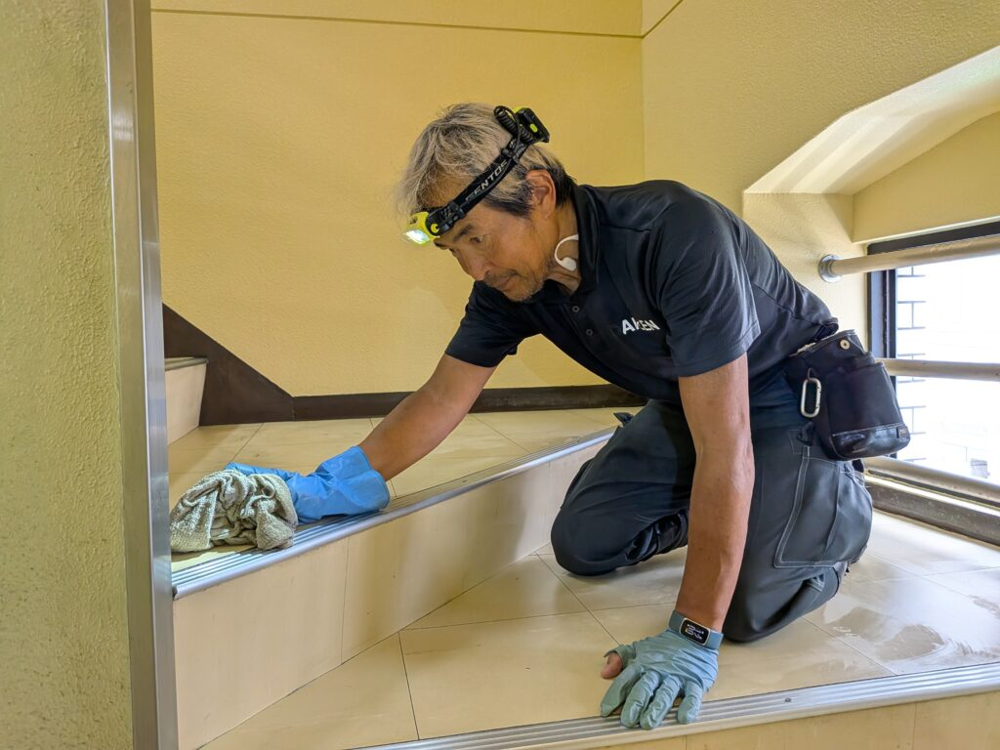
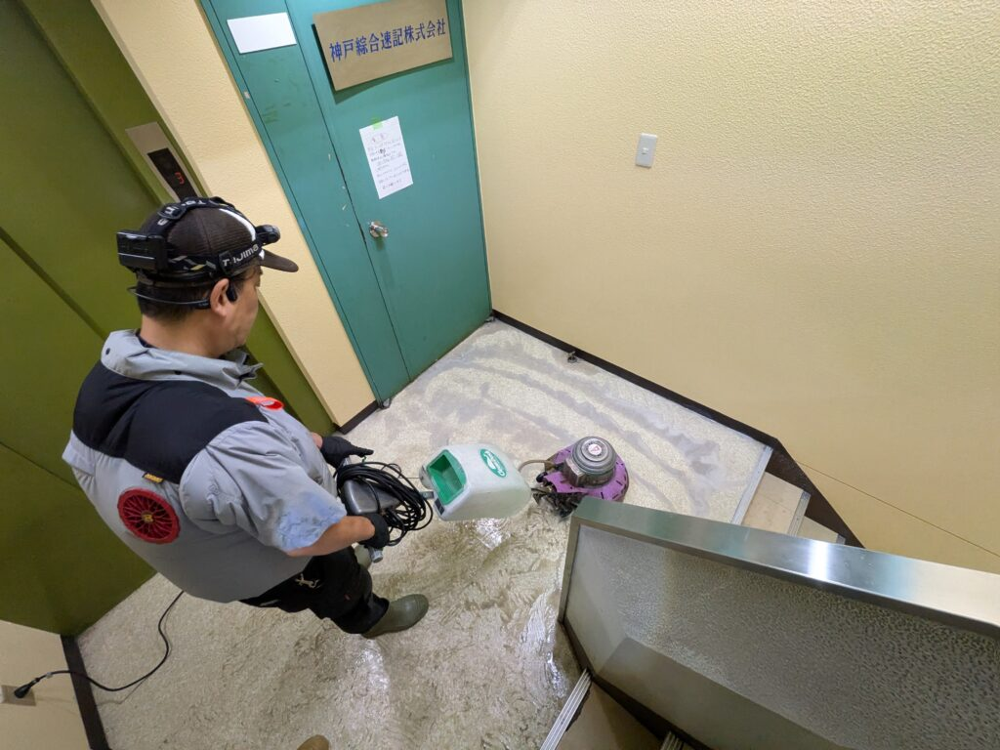
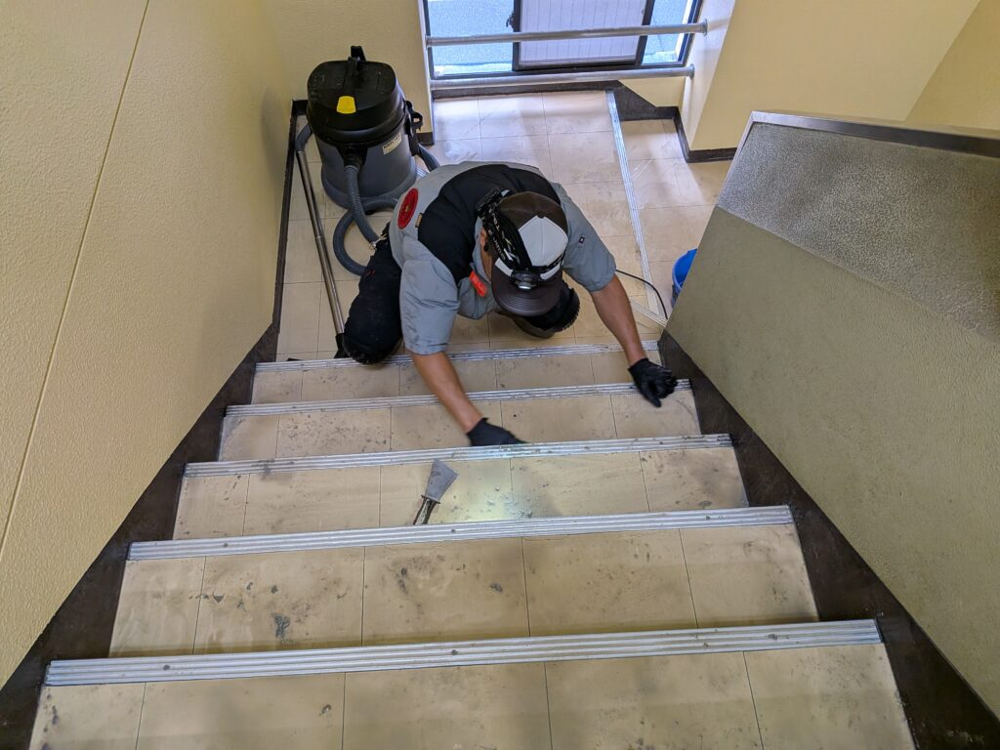
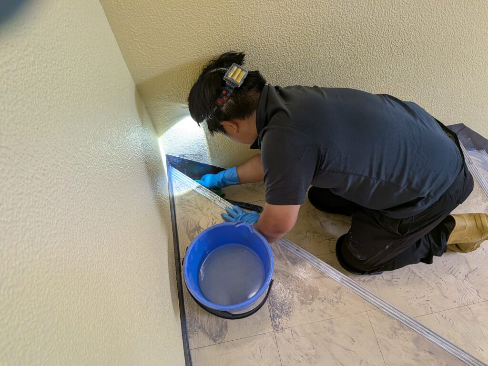
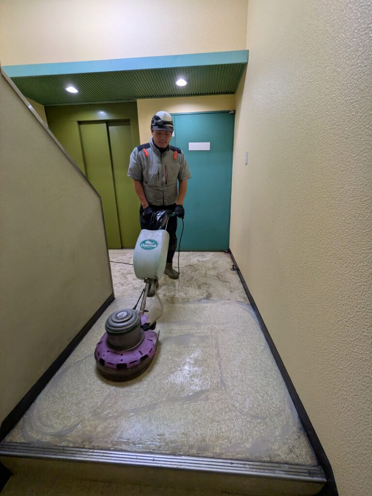
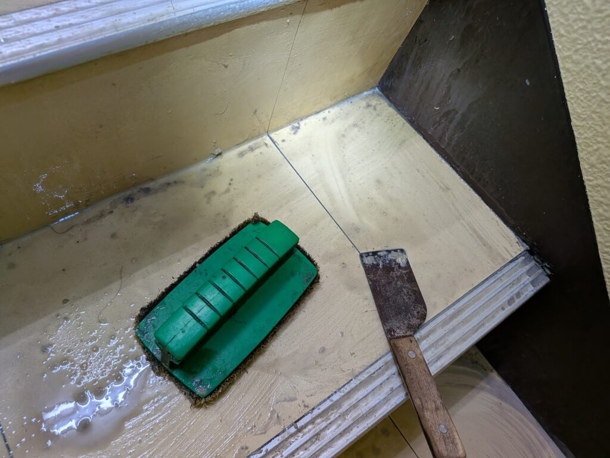
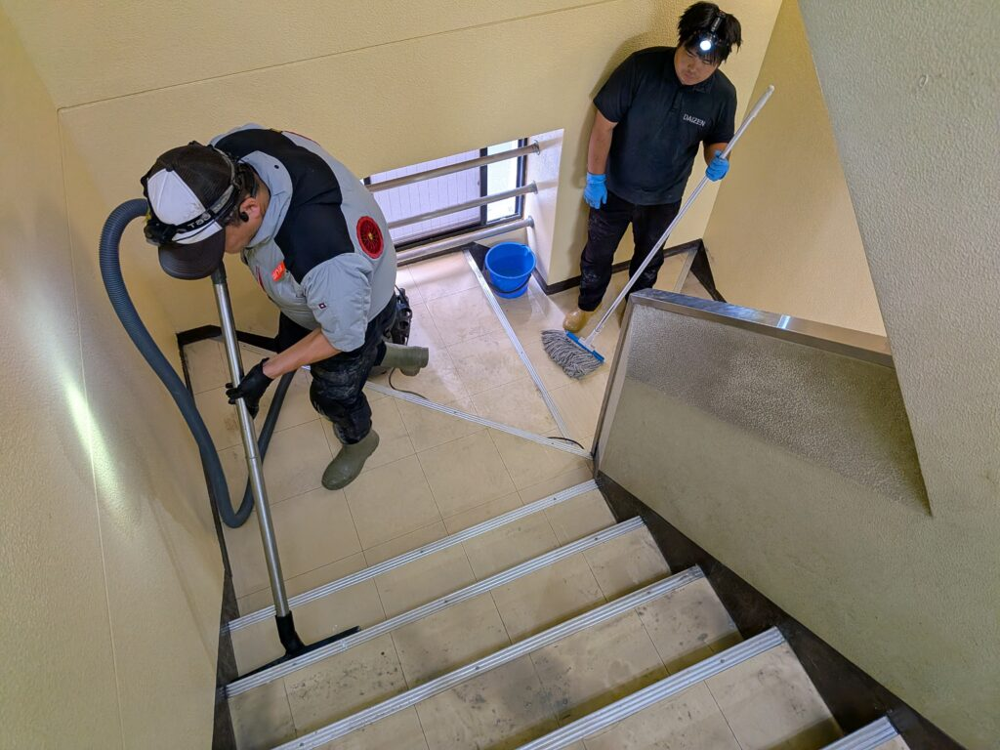
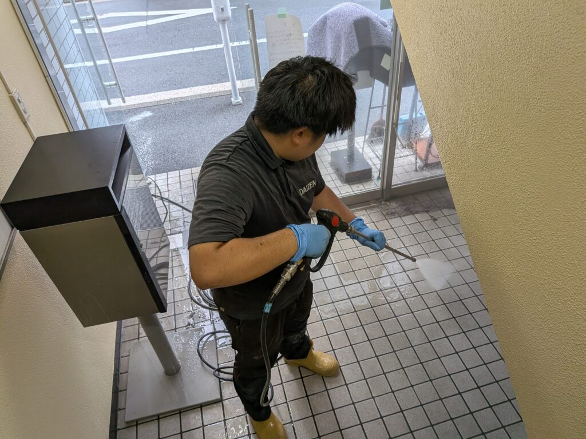
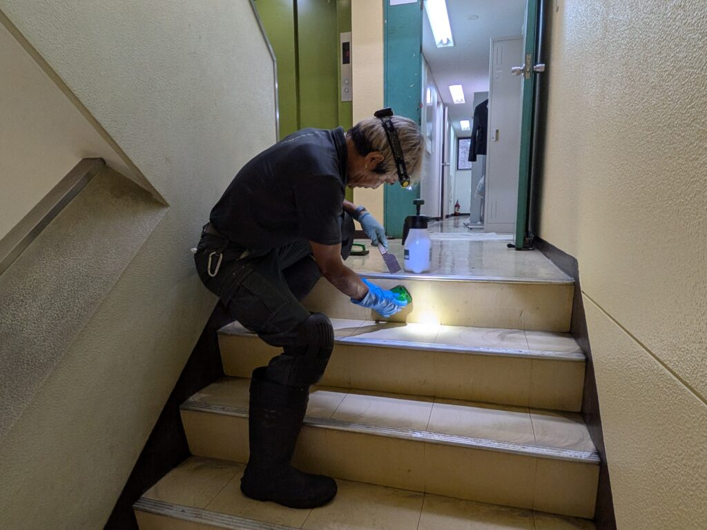

神田三崎町のリピーターSビル様の「階段剥離洗浄クリーニング」と「エントランス高圧洗浄クリーニング」と「エレベーター前床面剥離洗浄クリーニング」を実施しました！オフィスのお盆休みに床面と階段剥離洗浄です！

神田三崎町のリピーターS様ビルの「階段剥離洗浄クリーニング」と「エントランス高圧洗浄クリーニング」および「エレベーター前床面剥離洗浄クリーニング」を実施しました！階段剥離洗浄は特に難しい技術が必要です、床面剥離洗浄で使用するポリッシャー機器が使えませんので、階段専用ポリッシャーと、手こすりで剥離洗浄クリーニングを実施して行きます。特に難しいのは、階段の踊り場の前後の幅木部分と、各階段の「蹴込み」と言われる垂直面の、堆積汚れをしっかり剥離洗浄する技術と、3回から5回以上繰り返す、手擦りによる堆積汚れの剥離洗浄モーションを、常に均一の圧を加えながら、丁寧に、繰り返し繰り返し、ムラの無いように擦って行く技術と集中力の発揮が、プロフェッショナルチームでは5時間前後に渡って続きます。この技術力と集中力がDAIZENプロフェッショナルメソッドの中核になります。階段ポリッシャーは、超小型ですが、芯を出して丁寧に回転させて、階段の踏み面を擦って行きます。遠心力があるので、芯を出した技術者でないと、「階段から転げ落ちる」事もあります。丸一日掛かって、3階のエレベーター前〜エントランス高圧洗浄までが完成しました！







